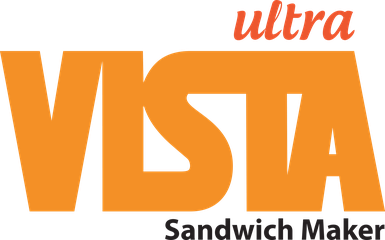
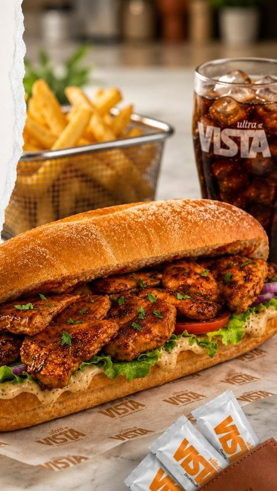
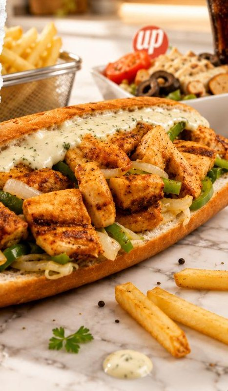
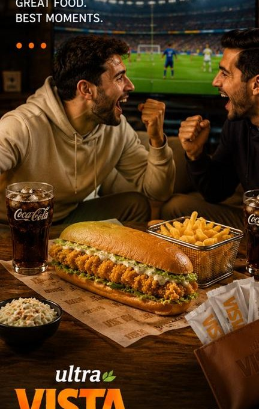
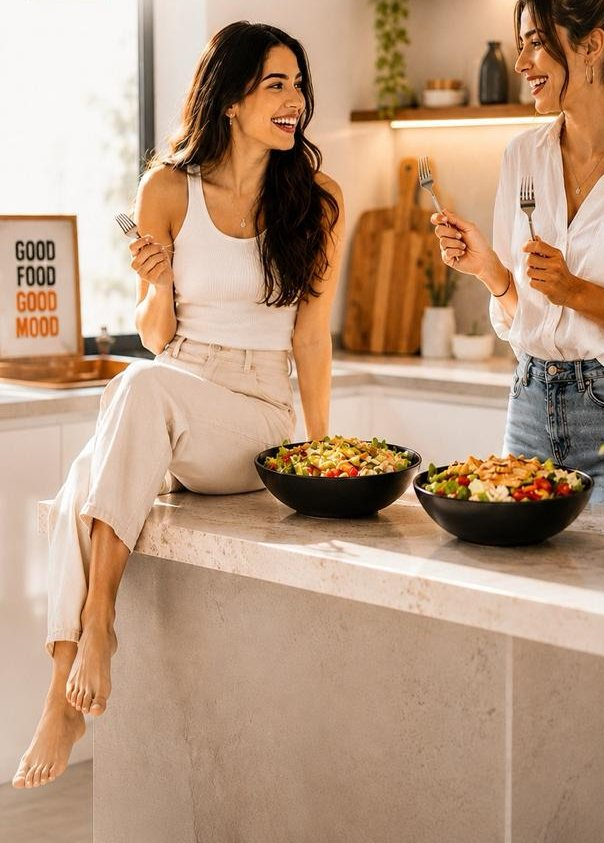

مكوّنات حقيقية
لحم ودجاج وخضار طازجة بمواصفة استلام محدّدة — بلا بدائل ولا اختصارات.

مفهوم ساندويش سريع ومرن تحت مظلة سيفنز غروب، مصمَّم للمساحات الصغيرة ومعدلات الدوران العالية — بخبز يُخبز يومياً وتشكيلة نكهات تجمع مطابخ العالم.


لحم ودجاج وخضار طازجة بمواصفة استلام محدّدة — بلا بدائل ولا اختصارات.
الخبز والصلصات تُحضَّر كل يوم، والساندويش يُركَّب لحظة الطلب لا قبله.
تتبيلات وصلصات مطوَّرة داخلياً تعطي كل صنف شخصيته الخاصة.
ألترا فيستا مفهوم Sandwich Maker سريع ومرن، مصمَّم ليعمل ضمن مساحة محدودة بمعدل دوران عالٍ — وهذا ما يجعله من أسهل نماذج المجموعة قابلية للافتتاح في موقع جديد.
القائمة مبنية على فكرة الرحلة: كل ساندويش يستحضر مطبخاً مختلفاً، من التكا الهندية إلى نكهات الشرق الأقصى، إلى جانب السلطات والوجبات الجانبية ووجبات الأطفال.
خلف البساطة الظاهرة منظومة تشغيل كاملة: مواصفة قياسية لكل مادة، وصفة بمقاديرها، ووقت تحضير معياري لكل صنف — وهي نفس المنظومة التي تُنقل إلى أي فرع جديد.
من وجبة سريعة بين محاضرتين إلى سهرة مباراة مع الأصدقاء.

